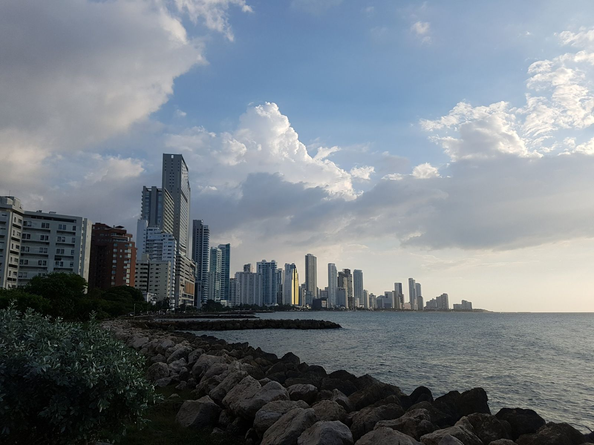
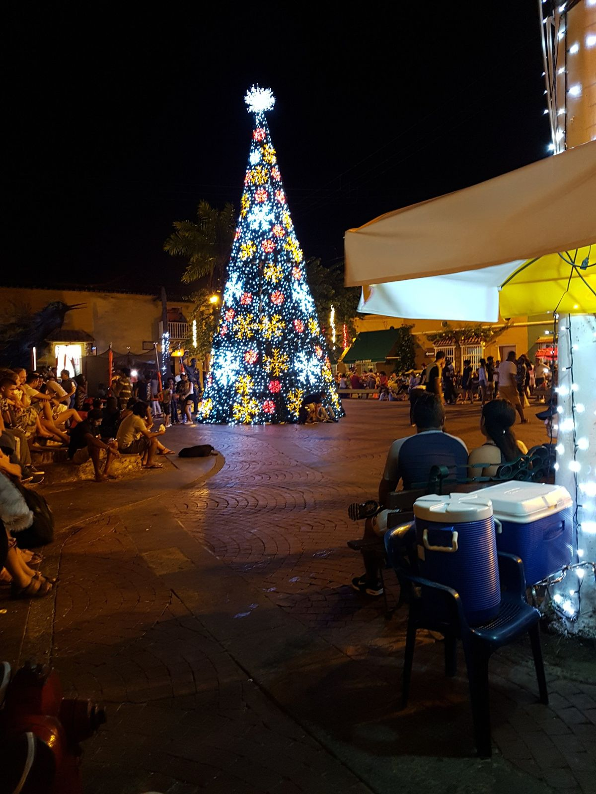
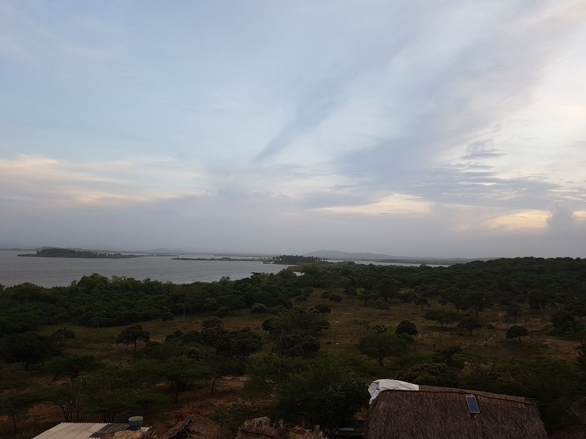
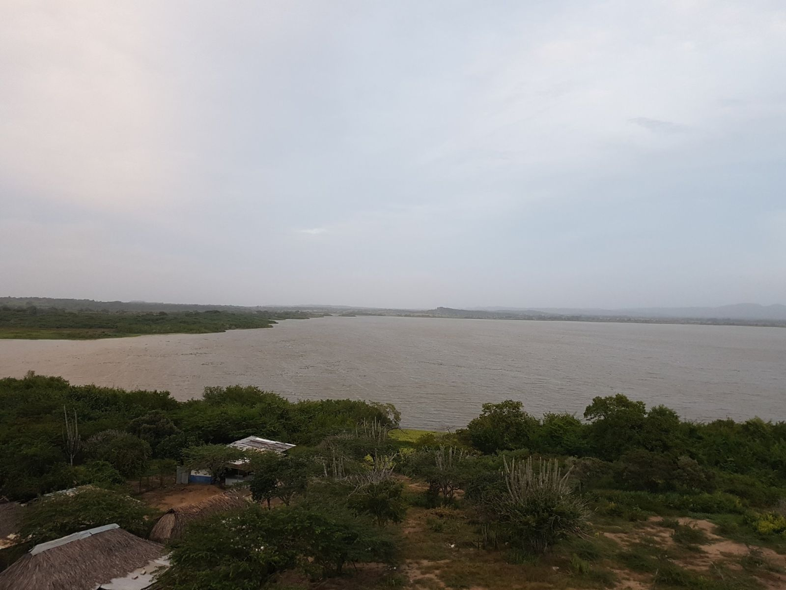
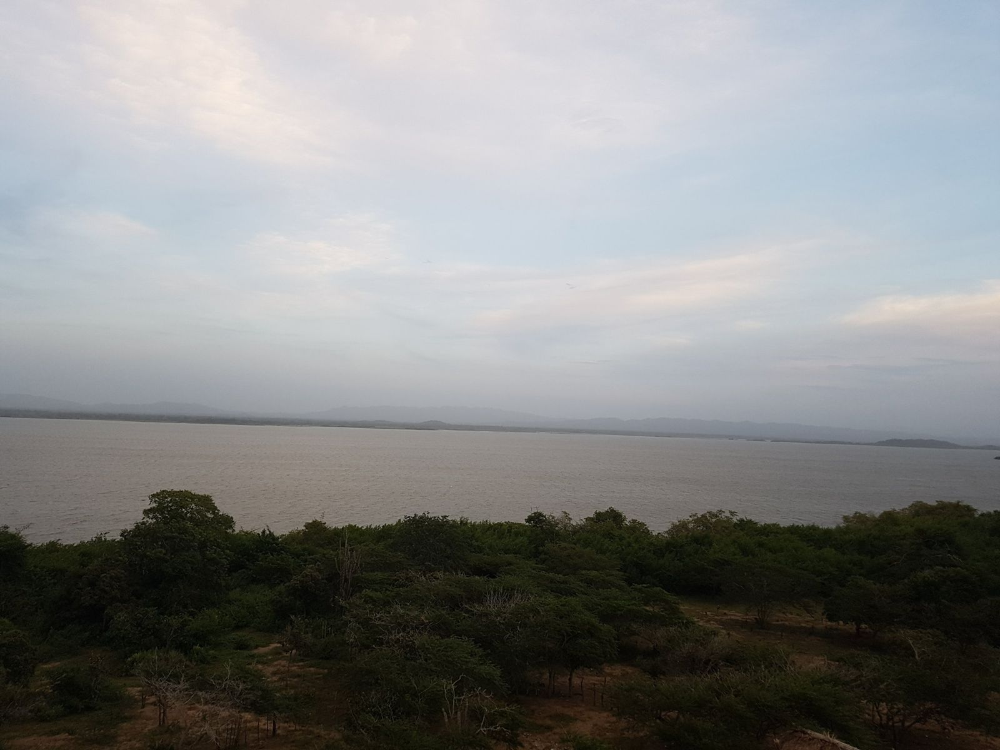
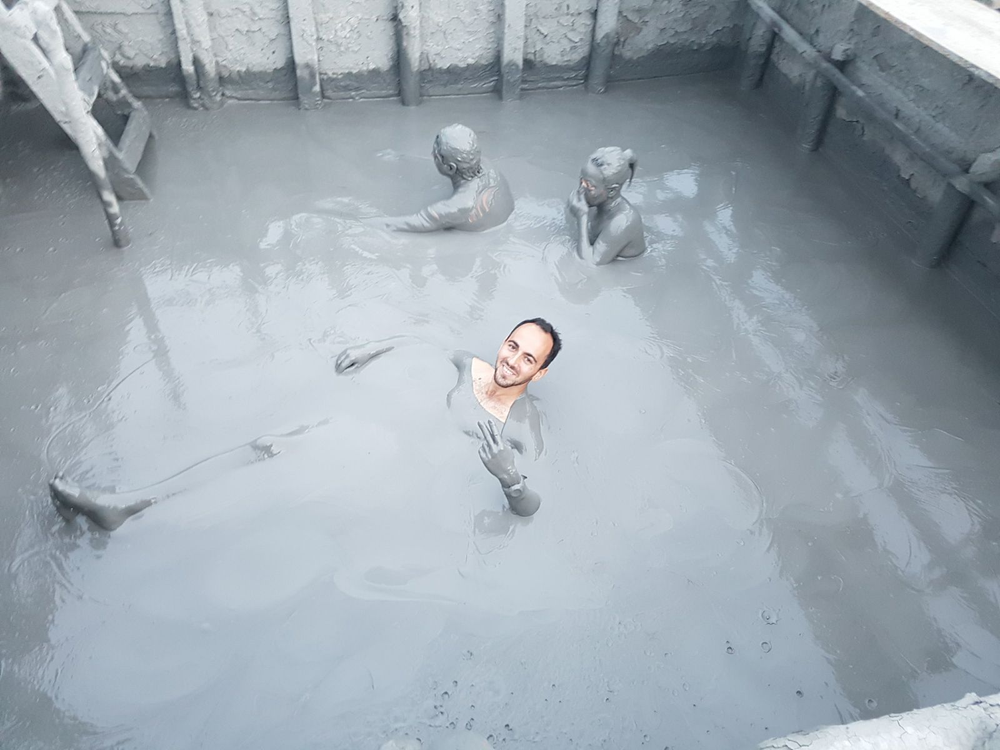
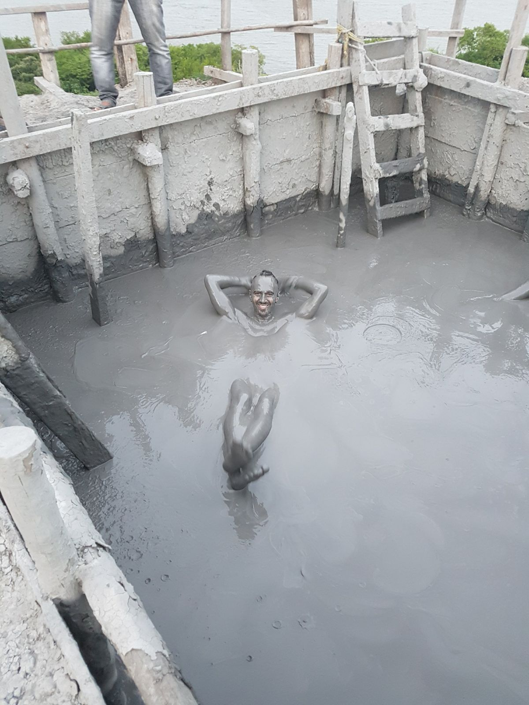
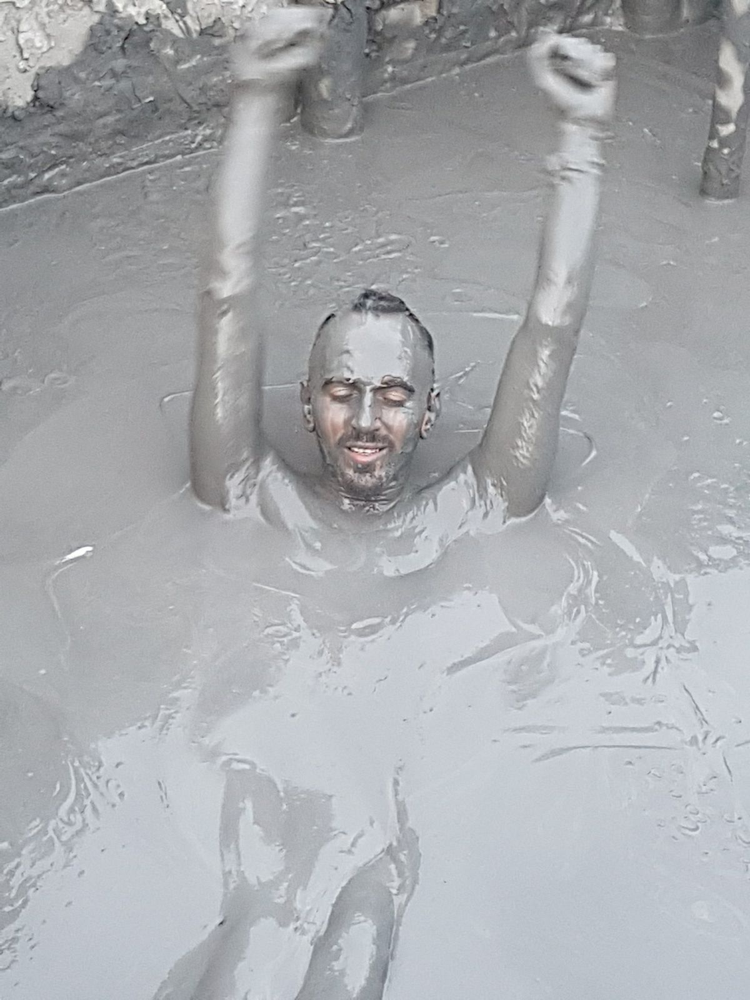

South America · Colombia · Cartagena
Cartagena and the El Totumo mud volcano, December 2017
This chapter covers the night ride from Santa Marta to Cartagena, one day in Cartagena on December 3, and an evening in the mud of the El Totumo volcano on December 4. I was alone.
My conclusion up front: El Totumo is a short, odd, very physical experience that is worth the half day, and I went too late in the day. My photos from the mud are from 17:37 to 17:40, and the sources I found put closing time around 17:00. I do not remember where I slept in Cartagena, how many nights I stayed, or what the taxi cost.
The times are my phone's clock. Google Photos shows most of them in Colombian time (GMT-5). The boxes hold research I did in November 2026, each with a source, so you can tell it apart from what I remember.
The night taxi from Santa Marta
After the sunset on December 2 I went to the bus terminal in Santa Marta, met a few other travellers there, and we shared a taxi to Cartagena. I do not remember how we agreed it or what I paid, and I did not write it down. I took a few selfies and a five-second video in the car. I do not remember what time we left. I am leaving those pictures out, because the other people in the car did not agree to appear on a website.
What I found: a guide by Andrew and Emily, updated in October 2025, covers the route in the Cartagena to Santa Marta direction. It gives a public bus at about 60,000 to 70,000 pesos, 5 to 6 hours, from the bus terminals, and a shuttle minivan (Berlinastur) at 70,000 to 80,000 pesos, about 5 hours, sold in person at its station. It says you do not need to book ahead except in the peak season, December to February (alongdustyroads.com). Rome2rio estimates a taxi for the whole distance at about 3 hours of driving (Rome2rio).
What I did not find: a current price for a shared or private taxi on this route. Rome2rio's price column does not state its currency, so I am not quoting it. I also could not confirm what is a fair price for a seat in a shared taxi today, so ask at the terminal and compare it with the bus.
December 3: Cartagena
I must have arrived during the night or early morning, since the ride was a few hours, but Google Photos has nothing from that morning, so I do not know where I went first or where I slept.
The first photo of the day is at 16:39, from a rocky seawall with the towers of Bocagrande on the horizon. Google Photos places it between Bocagrande and Getsemaní.

The last photo of the day is at 20:43. Google Photos places it in Cartagena, in the area of the old walled city, and what I can see is a plaza with a very large Christmas tree covered in white lights with red and gold flowers on it. People sit on the stone steps on the left, others are on benches around the plaza, and a vendor's umbrella and two cooler boxes take up the right side. A blue bird sculpture is on the building at the left edge. I do not remember which plaza it is and I will not guess a name.

December 4: the El Totumo mud volcano
On December 4 I went to Volcán de Lodo El Totumo, a small mud volcano near the coast between Cartagena and Barranquilla. Google Photos places my photos at the volcano, in Santa Catalina, Bolívar. I do not remember how I got there, whether it was a tour or a taxi, what I paid, or who else was in the group.
The first three photos are from 17:32. They were taken from above, from the platform at the top of the volcano, and show the lake on one side with a thatched roof at the bottom of the frame, low scrub and a pale evening sky with the sun already behind the clouds.



The mud photos are from 17:37 to 17:40. At 17:37 I am lying on my back in a square pit of grey mud, smiling and holding up a hand, with two other bathers behind me. At 17:39 I lie back with my hands behind my head, and at 17:40 I have both arms up. I did not blur the other two, because they are covered in mud and one faces away from the camera and the other has a hand over her face.



In the photos I float on top of the mud without effort. I do not remember how deep it was, whether there was a massage, or where I rinsed off afterwards.
What I found: a travel guide with a 2026 copyright and no update date gives an entrance fee of about 20,000 to 25,000 pesos, with a massage, photos and a rinse in the lagoon as extras at about 5,000 to 10,000 pesos each. It gives the hours as roughly 08:00 to 17:00 with a last entry around 16:30, a distance of about 55 km and about an hour by road from Cartagena, a cone about 15 metres high that fits 10 to 15 people in the crater, no lockers, cash only, and organised day tours at about 35 to 65 US dollars including transport (nomadotravel.app). The same page says there is no official website to check the hours against.
What I did not find: an official source for the fee or the hours. A second guide I tried to read would not load. If those hours are right, my 17:37 photo means I went in after the last entry, and I do not remember how that worked, so do not plan on arriving that late.
The days after
I have no photos from December 5 or 6. The next photos are from December 7, in Medellín, and they are the next chapter. I do not remember when I left Cartagena or how I reached Medellín. I think it was by bus, and I have no ticket or photo to confirm it.
What I found: Gecko Routes, updated on 1 November 2025, lists the route in the Medellín to Cartagena direction. Fares are 130,000 to 186,000 pesos, trips take about 14 to 15.5 hours, and buses run between the two main terminals, with departures in the late afternoon and evening counted as overnight (geckoroutes.com).
What I did not find: a source for the Cartagena to Medellín direction itself, so treat these as the same route in reverse and check the fare and times at the terminal. I do not know which company I used, if I did use a bus.
What I do not remember
I do not remember where I slept in Cartagena, how many nights I stayed, what the taxi cost, how I reached El Totumo or what I paid there. I took no notes. The photos give the sequence and nothing more.